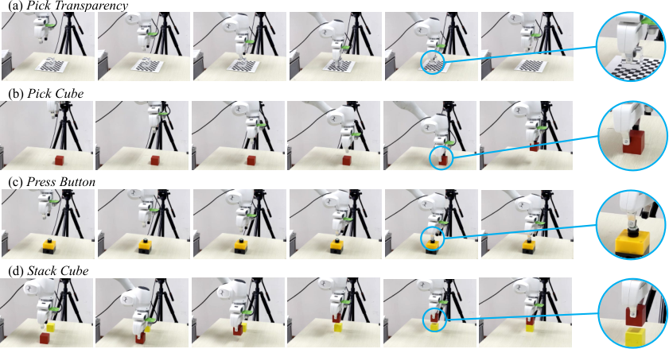
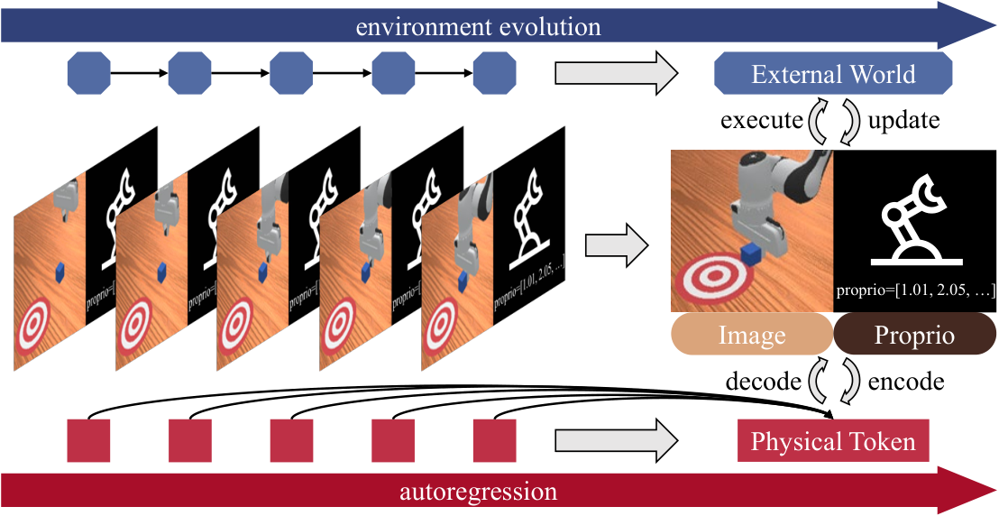
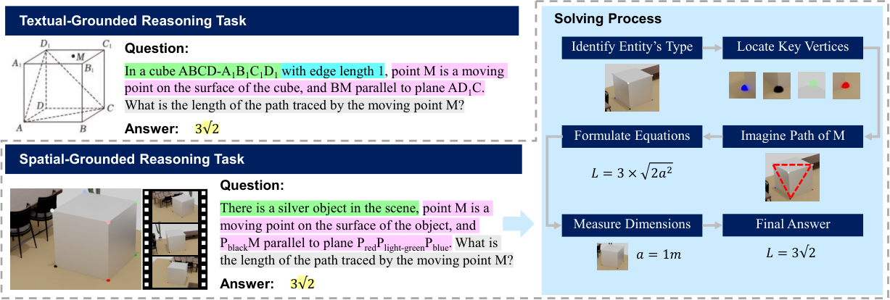

论文
我参与的研究主要关注两个问题：如何利用视频模型学习机器人操作，以及如何评估模型对三维空间的理解与推理能力。
Learning Physics from Pretrained Video Models: A Multimodal Continuous and Sequential World Interaction Models for Robotic Manipulation
Zijian Song, Qichang Li, Sihan Qin, Yuhao Chen, Tianshui Chen, Liang Lin, Guangrun Wang
ICMR 2026
PhysGen 研究如何把视频预训练中学到的动态规律用于机器人操作：在同一个模型里预测未来画面和动作，执行后再根据新的观测继续预测。

四项真机任务：抓取透明物体、抓取方块、按按钮和堆叠方块。图片来自论文图 5。
如何连接视频与动作
模型把视觉观测和动作块表示为连续的“物理 token”，以自回归方式逐步预测。预测出的 token 分别解码为未来画面和可执行动作，环境返回的新观测再进入下一轮预测。模型通过因果注意力掩码组织视觉与动作之间的信息依赖，并结合前瞻式多 token 预测（L-MTP）和 KV 缓存提高预测与推理效率。
实验设置
论文在 LIBERO、ManiSkill 和图示的四项真机任务上评测。模型先在视频数据上预训练，再使用目标操作任务的示范数据微调，考察视频预训练能否帮助模型学习机器人操作。
Physical Autoregressive Model for Robotic Manipulation without Action Pretraining
Zijian Song, Sihan Qin, Tianshui Chen, Liang Lin, Guangrun Wang
arXiv · 2025
PAR 尝试将视频预训练中学到的动态规律迁移到机器人控制，联合生成未来画面与动作。这里的“无需动作预训练”指不使用大规模机器人动作数据进行预训练；目标任务仍需要示范数据微调。

模型联合预测画面与动作，并在动作执行后接收新的环境观测。图片来自论文图 1。
方法思路
模型将视觉与动作 token 放入同一序列，用因果自回归模型预测，再由基于扩散模型的解码器生成对应的画面和动作。执行后的新观测会成为后续预测的上下文，让预测过程持续接收环境反馈。
实验设置
论文在 ManiSkill 的推方块（PushCube）、抓方块（PickCube）和堆方块（StackCube）任务中进行评测，并通过消融实验比较自回归结构与不同解码方式。项目主页提供了预测画面与实际仿真执行的对照演示。
我的工作
我参与模型开发、训练评测和论文撰写。相关工作还包括真机实验与示范数据采集，具体内容见 HCP Lab 研究经历。
SIRI-Bench: Challenging VLMs' Spatial Intelligence through Complex Reasoning Tasks
Zijian Song, Xiaoxin Lin, Qiuming Huang, Sihan Qin, Guangrun Wang, Liang Lin
arXiv · 2025
SIRI-Bench 把立体几何题放进三维场景，评估视觉语言模型（VLM）能否先从视频中找到解题所需的空间关系，再利用这些条件完成推理。

同一道几何题的两种呈现方式：直接给出文字条件，或让模型从三维场景中提取关键条件。图片来自论文图 1。
怎样构造题目
自动场景生成引擎将几何题转换为三维场景和视频。题目中的关键几何条件通过画面呈现，辅助条件和问题保留为文字，因此模型需要结合视觉信息解题。
怎样评估空间理解与推理
实验比较从视频中提取条件和直接读取完整文字条件两种设置，并分析空间感知与推理中的错误。这组对照有助于判断：模型是在理解场景时遗漏或误读了条件，还是在获得条件后仍然无法完成推理。